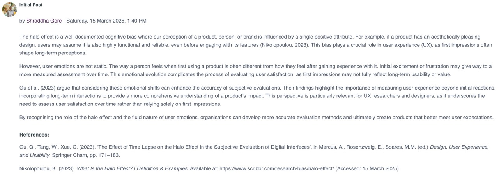
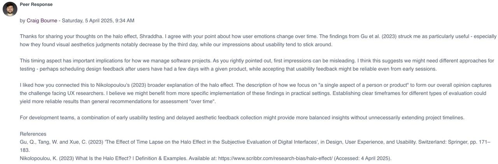
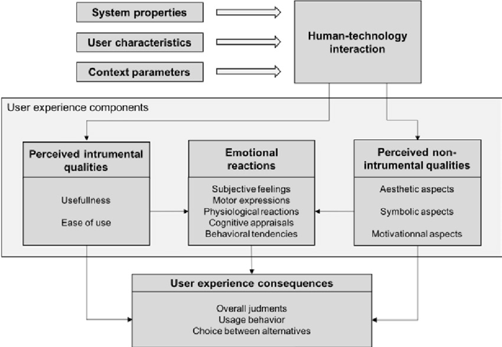

Unit 7: Software Development Life Cycles
In unit 7, we examined how software development life cycles (SDLC) affect the way in which a project is managed. More specifically, we considered the waterfall and agile approaches to project management. We then looked at the specific tasks involved in each stage of a life cycle in more detail, highlighting the ways in which the project manager supports the activities involved.
Required Reading
- Ferre, X. et al. (2004) Improving Software Engineering Practice with HCI Aspects. Lecture Notes in Computer Science. vol. 3026. Germany: Springer Berlin / Heidelberg. 349–363.
- Mittal, R. and Singh, V. (2021) 'Risk Analysis in Software Cost Estimation: A Simulation-Based Approach', Turkish Journal of Computer and Mathematics Education, 12(6), pp. 2176–2183.
- Souza, F. A., Lima, R. and Barbosa, J. L. V. (2021) 'A Risk Prediction Model for Software Project Management Based on Similarity Analysis of Context Histories', Information and Software Technology, 131, pp. 106497.
Unit Work
Collaborative Discussion - Peer response
The second week of the collaborative discussion required us to reflect on and respond to a peer's initial post, adding comments about how human emotions might affect the user experience. I responded to Shraddha's post:
 Read the full discussion post here.
Emotional Reactions of User Experience
The second task of the unit was to look at the 'Components of User Experience’ model from Van der Linden et al. (2019), and consider the 'Emotional reactions' of user experience.
Figure: Components of User Experience Model (Van der Linden et al., 2019)
We then had to answer the following question:
As a Project Manager, what might be your response to manage the emotional reactions of a customer? You should use at least three academic papers to support your response and write a minimum of 300 words as your response.
I looked at Hassenzahl et al. (2006), Law et al. (2014), Norman (2004), and Van der Linden et al. (2019). My response to the question can be found here.